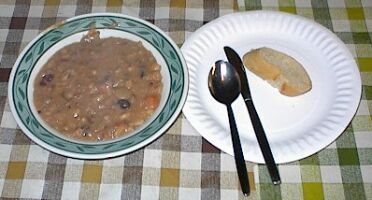

N'èrvéchîn Marie atou san dévis.

Par excellence, touos ches bouons fricots tch'ont tréjous 'té les spécialités d'Jèrri – des gâches à fouaie, des bourdélots faits auve du sud rom'thi, du pâté à solyi, des crêpes, des nouozeles ou god'nitchettes, des croquesingnoles, des mèrvelles, des galettes à vrai, du simné, d'la gâche à lait su, du pâté d'rhubarbe, gâche à crétons, nièr beurre, des pais au fou et des fêves, du pouothé bouoilli, patates fricachies, des colfrites, des bênis, des pihangnes, du lanchon, des champîngnons fricachis, du podîn d'Noué, d'la g'lée d'mouaithes, d'l'ieau d'cannelle, du noyau, du pré, d'la biéthe dé spruche, et cétéra, et cétéra.
Ah, boustre d'mêtchi, ch'est là d'fanmeux fricots! L'ieau vouos en veint dans la bouoche rein qu'd'y penser. Et tch'est qui ditha qu'nouos vièrs né savaient pon apprêter les provisions? Et qu'les cheins du passé n'savaient pon vivre ni n'jouissaient pon d'la vie?
Les vielles couôteunmes d'aut'fais nouos pathaissent tchuthieuses, dé nouos jours, car y'en a tant parmi nous tchi n'en ont pon l'expérience. Nou-s-en a ouï pâler ès uns et ès autres, mais ch'est tout, dgia. Nou's'a ouï dithe, par exemplye, comme tchi qu'les élections 'taient m'nées et tchi excitement qu'i' y'avait entouor, comme tchi qu'les bordées d'grand's tchéthues avaient lieu et tchi fêt'tie qu'y'avait la séthée dé pathel grand jour; et comme tchi qu'y'avait les taillaisons d'vrai, les Grand's R'veues, les courses ès Landes, les Sonneux ou fêtes dansantes et toutes les promèn'nies si difféthentes d'acheteu. Car i' faut dithe qué les gens prenaient lus pliaîsi bein difféthement qu'jé faisons, nous. Au temps passé par exemplye y'avait la Jouôte – lé Mardi Gras, le Lundi d'Pâques et autres jours de fêtes, quand l'publyi 'tait alloué dé tithe à tant l'coup sus des cotchets, des lapîns et autres annimaux. (Quant à ch'la, ma fé, eune belle chose qué ches jeux-là n'sont pus!) Aut'fais étou y'avait les pêqu'sies d'hîtres à Gouorray et ailleurs, auve touos les pars bâtis exprès pour l'êlevage dé chu paisson si èrcherchi; la bâtithie et lanch'chie d'navithes tout l'long du Sud (et d'piêssants navithes y'en avait d'ieux!) et l'commèrce qué les bourgeais faisaient atou, la pêque d'andgulle, et à la Côte la pêque dé mouothue ou'qu'des chents Jerriais 'taient empliyés comme sîmplyes pêtcheurs, clèrques ou même maîtres d'graves. Y'avait étou touos les mêtchièrs qué nou n'connaît pas aujourd'aniet – les cordéthies et les faiseurs dé pannièrs, lé mêtchi du tonn'lyi, du tangneux, du couvreux en glyi, du tchîncailli, du monnyi, tchèrpentchi d'navithes, tasseux d'avoût (tchi couvrait san tas auve des gliots d'favés), lé charron, lé menuisyi, lé naviguant, l'pêtcheux et bein d'autres – et même lé dêcompteux et l'chorchi! Quâsi touos ches mêtchièrs sont oubliés ou à la préchaine porte dé y'être, et quand nou s'mettrait sus sa tête, man bouonhomme, nou n'y peut rein.
Tout des r'liques du passé, comme étou les vièrs ditons tchi s'en vont à grands pas, et les histouaithes qué nou racontait aut'fais, et les vielles chansons qu'nou chantait au sé sus la filyie, comme par exemplye, Man bouonhomme est bein malade, Ma charmante Julie, En passant par siez nous – la belle zigue, zigue et Le bon marin mais il s'en va. Bein d'autres qu'i' y'avait, mais i' sont tous oubliés. Et les bouons mots qu'nou r'citait ès avièrs pour les abuser, quand i' n'taient pon à jopînter et à j'vauchi, pour un p'tit brîn ou devant aller les tâner pour la niet – comme Coquelicot, j'ai mal au dé, En m'en allant à St. Martîn, Féthe, féthe, féthe la p'tite pouliche, Marie la pie, P'tit dé, ri dé, Châchons, bulletons et acouo eune masse dé tchi qu'nou n'ouait pus, hélas! Tout ch'la est oublié et à janmais!
Et ou'est don qu'est touos les vièrs objets, ôtis, vaissieaux et autres articlyes d'mênage dé nouos grand-péthes? J'ai dêjà pâlé du crâsset et d'la filyie, mais y'avait l'raclyi à pain, les jûtes, la crémilliéthe dans l'âtre, la canne à traithe en pâlîn et la selle à tuthet (pour faithe lé beurre), lé saleux en pièrre, lé rouet, la jontchiéthe, lé tchînta, lé mar dé Rouen, la couochette dans la chambre, et l'baheur, lé dêvidouaithe (ou dêvieux), lé godîn à cidre, lé hannapé ou l'malzard pour mettre lé cidre à cauffer dans la braise, la houlette, les vaisseaux en êtain, les êmouchettes pour la chandelle, la chifournie (la musique d'aut'fais), la tchéthue en bouais, la selle bâtchiéthe, lé sais, la m'suthe dé bouossé, dé cabot et d'siextonnyi, lé dard ou faucillon (pour lé grain et pour lé lanchon), l'fardé et la bougue (du temps qu'i' liaient les boeufs), lé venteux, et cétéra. N'en v'là don eune vielle collection, eune racachie d'gofeches tchi n'sont dgéthe connues par not' généthation; des choses tchi, temps fut, nou-s-éthait trouvé quâsi partout. Acheteu, iou aller pour dênichi eune telle affaithe comme eune bougue, eune selle bâtchiéthe, eune chifournie ou seulement eune vraie canne à traithe jèrriaise en pâlîn? Qué ch'est étrange, tout d'même!
Et combein qu'y'en a d'nouos âges (d'autchun âge, pour en dithe lé vrai) tchi pouorraient nommer les parties d'une tchéthue en jèrriais? Pas êpais, bein seux. Eh bein, y'a l'pilbaue, l'ouothillon, lé rachinné, lé plionmet, lé d'chet, lé patîn, lé toupillon, et sans doute, la milliéthe et l'talon, lé choutchet, la haie, lé coutre et la tôle. Pas pour dithe qué autcheune tchéthue dait aver toutes ches parties-chîn, car comme toutes aut' choses, la tchéthue jèrriais a fait du progrès né v'à eune quarantaine d'années ès mains du forgeux.
Les parties d'un preinseu étou – les connaiss'ous? Lé tou et la meule et la barre et l'amet, ouï, j'pense bein; mais et pis l'capeste, lé câblye, les gattes, lé mouton, la brébis, la prêsse lé dgide-âne, l'êtampêtre, la carrée, les pièches dé d'ssous et les pièches d'ssus, les jeunmelles, lé hai, lé vis, lé traîné, lé pivot et acouo deux'trais qu'jé n'mermets pon pour acheteu?
Ah bah, acheteu, nou pâle d'un machîn ou affaithe ou chose ou tracas d'eune chose quand nou n'en connaît pas l'nom. Hé, lé chose d'eune chose!
Eune autre èrlique du passé étou tchi vouos fait penser au vièr temps (et nou-s-en vait acouo tchitch'un 'chîn et là) ch'est l'vièr pits jèrriais – solide, sîmplye, utile, et quâsi vénérablye. Quand nou-s-y pense, combein dé fais qu'nou-s-a mannié l'gîndas atou les broques pour laîssi couorre lé sillot ava chu vièr pits, en app'yant eune main sus la votte ou sus la dalle, et combein dé fais qu'nou-s-a posé chu sillot sus l's ouothelles d'un côté ou d'l'autre, ou ofûche vèrsé l'ieau dans l'auget en dehors du pits pour abréver l'bestchias, et qué dé viages nou-s-y'a fait d'allant en dé v'nant – chu bouon vièr pits d'quat' chents ans!
Assa, né v'là deux'trais mots entouor chu temps passé qu'jé n'dévons nullement mêprisi ni en faithe dé riselées, car ch'est hardi întérêssant et châtchun dévthait s'en otchuper sans s'en motchi, sachant qu'l'histouaithe dé Jèrri est eune êtude d'un but à l'autre et qué j'pouvons en être ordgilleurs comme touos nouos anchêtres dévant nous en'taient en peine. Ch'est en tchi, sachons respecter lé vièr langage, les vielles maniéthes, la vielle vie et les deux-trais bouonnes vielles gens tchi sont acouo parmi nous, car les vièrs temps n'èrveindront pas. Pour l'amour du vièr temps!
Marie la Pie
Les Chroniques de Jersey 5/4/1941
Viyiz étout: